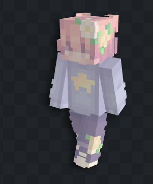
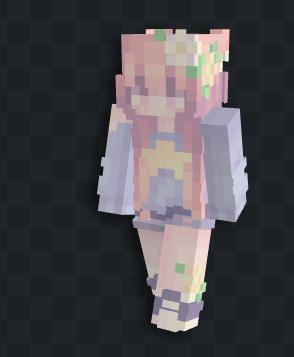

VERRAAD! TWEEDYLEOPARD74 ONTMASKERD

SERVER SPAWN - Schokkend nieuws bereikt ons vandaag. TweedyLeopard74, in de wandelgangen bekend als "Lawrence", is betrapt op trespassing op het terrein van WaffleUser, "Dean" voor de bekende.
Dit gedrag wordt niet getolereerd. Wees op uw hoede voor deze figuur. Hij is een gevaar voor de staatsveiligheid en de baseveiligheid.
⚠️ BELANGRIJKE MEDEDELING ⚠️
Verwar de verrader Lawrence (TweedyLeopard74) NIET met onze gewaardeerde burger Laurence (Lausgamer).
LAWRENCE (FOUT)

LAURENCE (GOED)